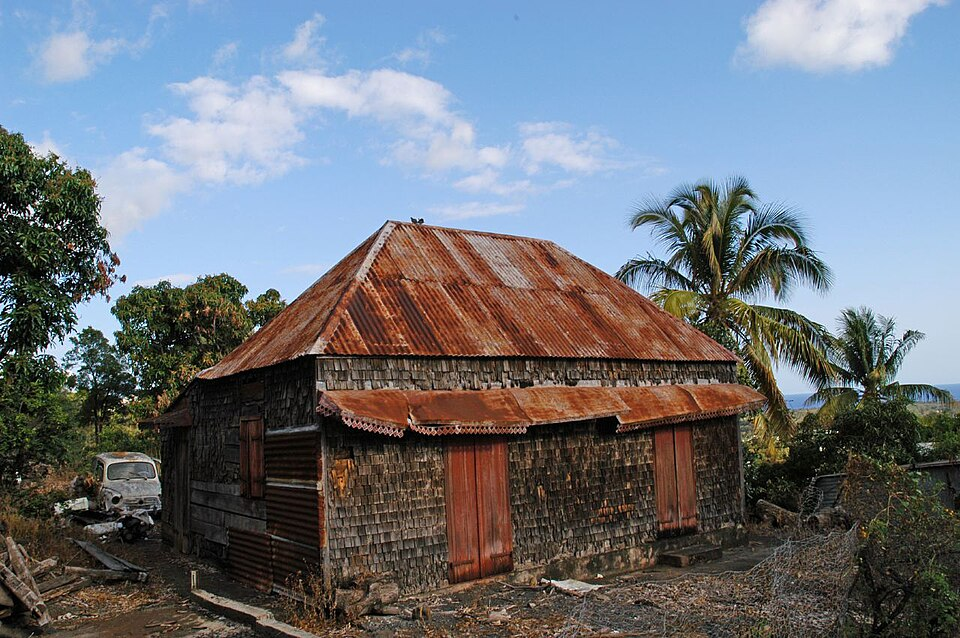

Le propriétaire décrit le bien, sa situation et ses contraintes.
Espace interne - non indexé
Devenir propriétaire partenaire
Entrer dans un parcours encadré pour étudier la remise en état d'un bien au service du territoire.

TVF analyse la faisabilité technique, juridique, économique et territoriale.
Les parties définissent usage, durée, formule économique, responsabilités et sortie.
TVF peut coordonner financements, matériaux, chantiers et partenaires selon le projet.
Le bien rénové accueille un usage utile : habitat, commerce, formation, culture ou activité locale.
À la fin, le propriétaire récupère un bien amélioré selon les termes de la convention.
Cadre de confiance
Aucun engagement n'est automatique. Chaque projet doit faire l'objet d'une convention écrite, d'une vérification juridique et d'une validation des conditions de sécurité, d'assurance et de financement.
Proposer un bienCadre d’action
Cette page s’inscrit dans la mission de Territoires Vivants France : redonner une utilité sociale, écologique et territoriale aux ressources aujourd’hui vacantes ou sous-utilisées.
Objectif
Clarifier le besoin auquel la page répond et les publics concernés.
Méthode
Relier l’action à l’observation, à la mobilisation locale et à la validation humaine.
Suite logique
Préparer une évolution progressive sans inventer de résultat, financeur ou partenaire.
Faire du logement vacant une ressource utile, pas un angle mort
La page gagne en crédibilité lorsqu'elle distingue clairement le repérage, la qualification juridique, le dialogue avec les propriétaires et les usages possibles. TVF peut ainsi parler aux communes, aux habitants et aux propriétaires sans annoncer de résultat non vérifié.
Un ordre de grandeur national qui justifie une méthode de repérage, de qualification et d'accompagnement local.
Le sujet est déjà porté par de nombreux territoires, avec un besoin d'outils simples et de coopération de proximité.
Le recyclage foncier est un levier national de revitalisation, souvent porté par des collectivités et acteurs publics.
Ce repère illustre l'échelle des espaces à transformer sans artificialiser davantage les sols.
Sources publiques de contexte : Zéro Logement Vacant pour la vacance résidentielle et l'outillage des collectivités ; Cartofriches - Cerema pour le repérage et le recyclage des friches. Ces repères ne sont pas des résultats de Territoires Vivants France.
Cas d'usage à documenter
Logement vacant en centre-bourg
Identifier le bien, comprendre les causes de vacance, orienter le propriétaire vers une solution de rénovation ou de convention d'usage.
Immeuble dégradé à qualifier
Croiser état apparent, statut d'occupation, risques techniques et acteurs compétents avant toute communication publique.
Habitat solidaire temporaire
Étudier une occupation encadrée pour répondre à un besoin local, seulement après accord du propriétaire et sécurisation du cadre.
Retours terrain à recueillir
Témoignages utiles
Les témoignages ne doivent pas être inventés. Ils seront publiés uniquement après accord explicite et vérification du contexte.
Voix à écouter
- Propriétaires confrontés au coût des travaux
- Collectivités cherchant une méthode de repérage
- Habitants concernés par la vacance de rue ou d'immeuble
Preuves attendues
- date et territoire
- autorisation de publication
- lien avec une action vérifiable
Indicateurs d'impact
Les chiffres propres à Territoires Vivants France doivent rester à zéro ou en attente tant que les signalements, projets, matériaux, bénévoles et territoires ne sont pas enregistrés puis validés dans Supabase. Cette page est prête à accueillir des indicateurs réels, datés et vérifiables.
Signaler ou proposer un bien
Un bien ne doit être publié qu'après validation de son statut, de sa source et des conditions de diffusion.
Devenir propriétaire partenaire : passer du bien vacant au projet d’usage
Un logement vacant ou un immeuble dégradé ne devient pas utile par simple signalement. Il faut comprendre son histoire, son propriétaire, son état technique, ses contraintes juridiques, son coût de remise en état, son environnement urbain et les besoins réels du territoire. Cette page doit donc expliquer le chemin entre le constat d’abandon et une solution acceptable pour toutes les parties.
TVF se positionne comme un tiers de confiance : l’association peut aider à vérifier les informations, dialoguer avec les propriétaires, orientér vers les dispositifs publics, rechercher des matériaux de réemploi, mobiliser des bénévoles lorsque c’est possible et préparer une convention d’usage temporaire si le cadre le permet.
Comprendre la cause de vacance
Succession, coût des travaux, absence de demande locale, accès difficile, normes, copropriété fragile ou propriétaire éloigné : chaque situation appelle une réponse différente.
Construire une solution réaliste
La remise en usage peut prendre la forme d’un logement solidaire, d’une occupation temporaire, d’un habitat partagé, d’un usage associatif ou d’une orientation vers un dispositif public.
Protéger les personnes
Aucune adresse sensible ne doit être publiée sans vérification. Le respect du propriétaire, des habitants et du voisinage fait partie de la crédibilité du projet.
Module propriétaire
Le contenu doit rassurer : conserver la propriété, comprendre les options, évaluer les engagements réciproques et obtenir une lecture claire des engagements possibles.
Module collectivité
La commune a besoin d’une méthode de repérage, de priorisation et de médiation, sans transformer chaque signalement en promesse de rénovation.
Module habitant
L'habitant peut signaler une situation, mais TVF doit expliquer que le signalement ouvre une qualification, pas une intervention automatique.
- Recevoir ou créer un signalement documenté.
- Vérifier le statut du bien, les risques et les informations disponibles.
- Identifier un usage possible et les acteurs à mobiliser.
- Préparer un montage, une convention ou une orientation vers un dispositif adapté.
Positionnement TVF : remettre en usage l’existant sans déposséder, sans forcer, sans promettre trop vite, et en construisant des solutions utiles au territoire.
Logements vacants : comprendre la vacance avant de la transformer
La vacance résidentielle n’est pas un stock homogène de logements immédiatement disponibles. Elle recouvre des successions bloquées, des biens trop coûteux à rénover, des logements énergivores, des copropriétés fragiles, des propriétaires éloignés, des marchés détendus où la demande locative est faible, mais aussi des centres anciens où l’habitat ne correspond plus aux usages contemporains.
Pour Territoires Vivants France, l’enjeu est donc de ne pas réduire la vacance à un simple inventaire. Une commune a besoin de distinguer la vacance courte, normale dans un marché immobilier, de la vacance structurelle qui dégrade les rues, fragilise les commerces, augmente le sentiment d’abandon et consomme indirectement du foncier neuf lorsque les ménages partent construire plus loin.
La hausse des coûts de travaux, les exigences énergétiques, la complexité des successions, la difficulté à trouver des artisans et l’éloignement de certains propriétaires rendent la remise en usage plus lente. Dans les centres anciens, les logements peuvent être au-dessus de commerces fermés, sans accès indépendant ou avec des normes à reprendre.
Un logement vacant durable réduit la population résidente, affaiblit la clientèle des commerces, augmente la dégradation du bâti et peut produire un effet domino sur une rue entière. À l’inverse, remettre en usage l’existant soutient la sobriété foncière et limite la construction neuve sur terres agricoles ou naturelles.
Solutions concrètes portées par TVF
TVF peut intervenir comme tiers de confiance : signalement, qualification, dialogue avec le propriétaire, orientation vers les dispositifs publics, mobilisation de matériaux de réemploi, étude d’un usage temporaire, recherche de financements et suivi de projet. Le programme Bien Solidaire à Usage Partagé s’inscrit dans cette logique : conserver la propriété privée tout en rendant possible un usage collectif temporaire lorsque l’investissement réalisé le justifie.
Exemple fictif à visée pédagogiqueDans une commune moyenne, une maison fermée depuis dix ans pourrait être étudiée comme logement temporaire pour jeunes actifs après diagnostic technique, convention avec le propriétaire et mobilisation de matériaux de réemploi. Cet exemple est fictif : il illustre une méthode, pas un projet réalisé par TVF.
Un logement vacant peut-il être publié directement sur la carte ?
Non. L’adresse, la propriété, le niveau de vacance et les risques doivent être vérifiés avant toute diffusion.
TVF remplace-t-elle les dispositifs publics ?
Non. TVF se positionne comme acteur de mobilisation, de médiation et de coordination, en complément des collectivités et outils publics.
Pourquoi parler de rénovation et de réemploi ensemble ?
Parce que le coût des travaux est souvent un frein majeur : le réemploi peut réduire le gaspillage et aider certains projets à trouver une trajectoire plus sobre.